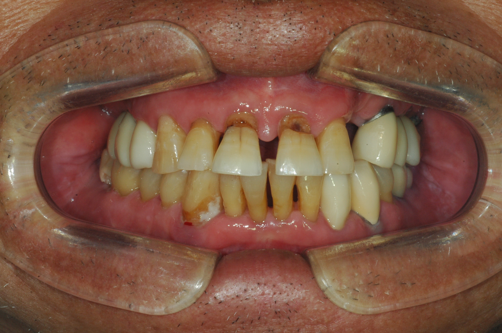
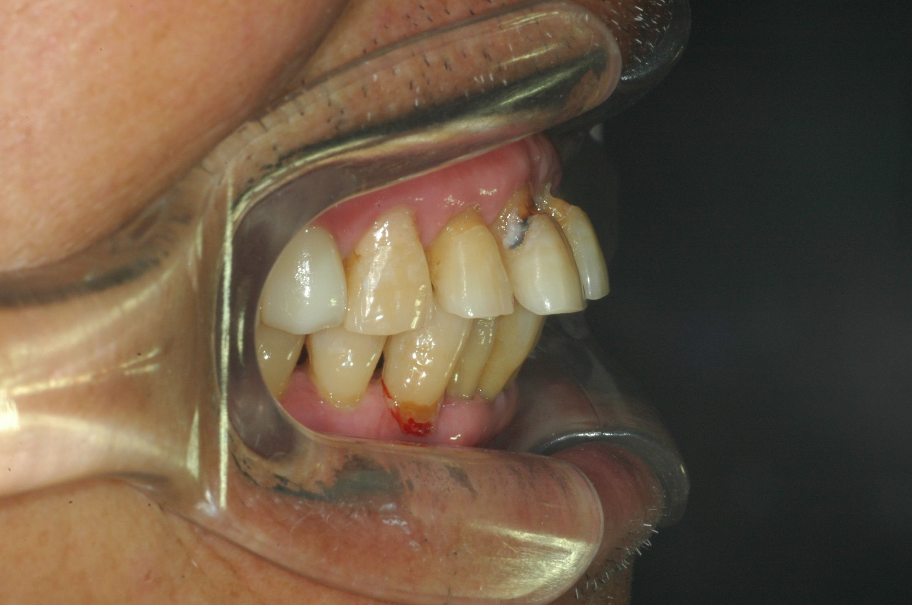
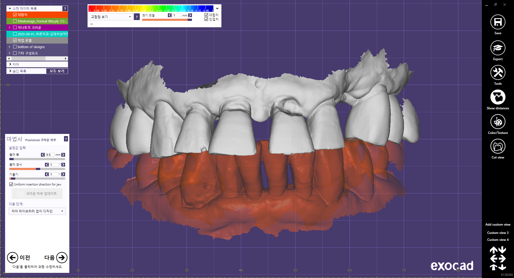
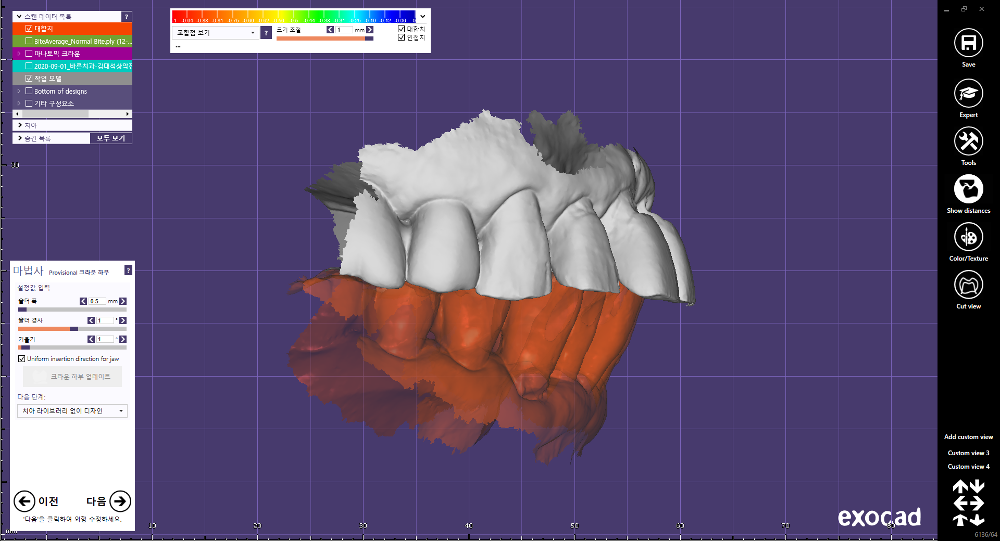
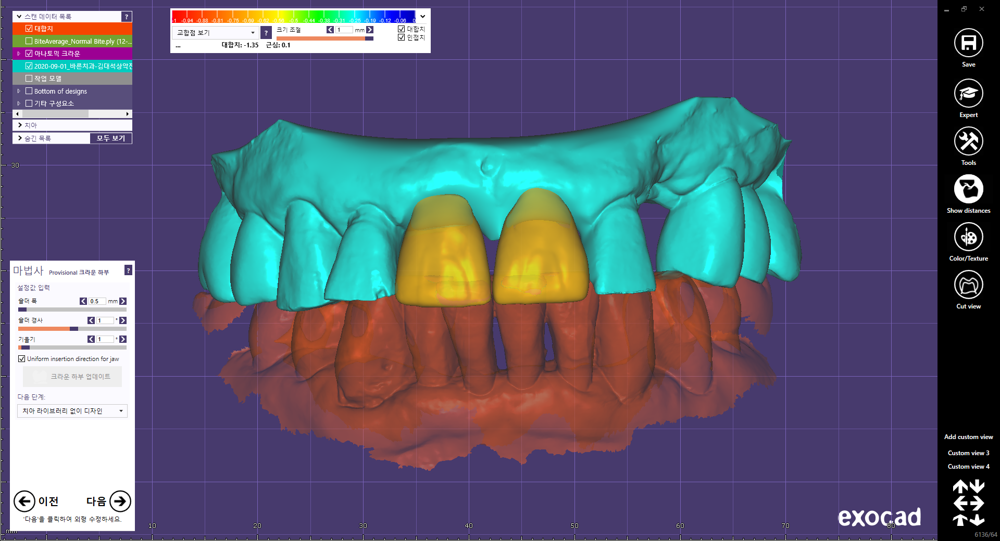
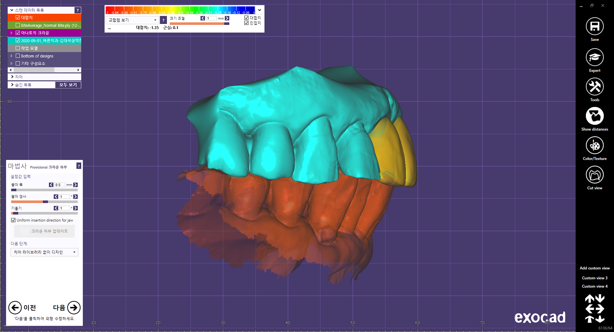
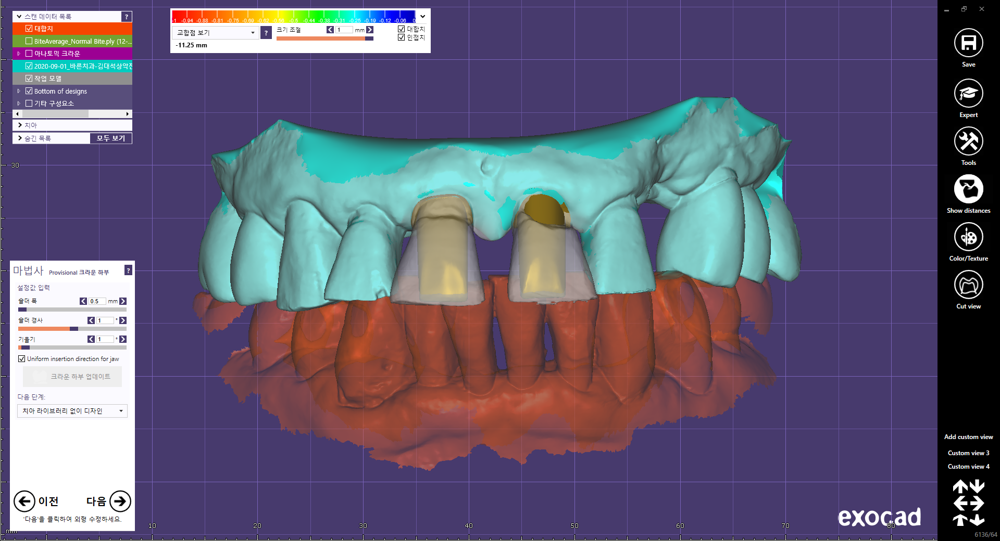
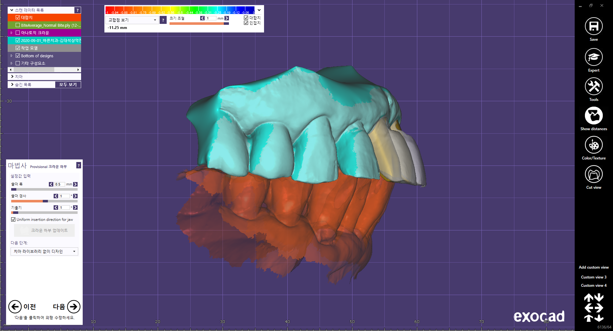
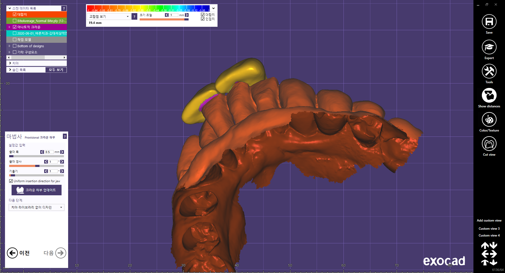
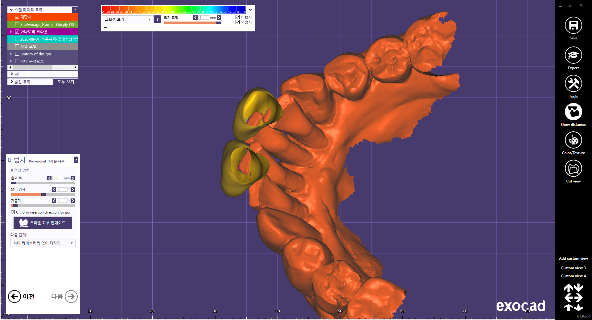

c.c: 상악 전치부 치료.
60대, male, Medical hx. n/s .
o> #11,2diastema, root caries, 1 protrusion, lower anterior teeth flaring, supraeruption .
Tx>
1. #11,21 RCT br.
2. #11,21 ext. br. or implant.
정도로 예상됩니다. 근데.. 둘중 결정하자니 좀 애매합니다.

좀 애매해요...

일단 스캔하고..

디지털 왁스업 합니다.

최소삭제량으로 삭제량 path 확인하고...삭제량이 좀 많긴한데 발치하긴 좀 아깝습니다.

대합치 삭제량도 확인합니다.
Tx>
1. #11,21 RCT post br. Cr. lenthening, #32-42 occl. reduction.
치료계획은 결정했고, 비용, 주의사항, 향후 발생할수 있을만한 상황을 반복적으로 설명할 예정입니다.
이전에 대합치 삭제 때문에 환자랑 몇번 실랑이가 있었는데요. 확실히 이해시키면서 진행하려고 합니다.
치료계획 ok하면...
첫내원에 RCT, (Cr. lenthening), temp br. 진행 - 어디까지 진료할것인지 결정하고...
근관치료 종료후 provisional br. 수정, 최종보철 진행할 예정입니다.
여기까지가 디지털 데이터를 이용, 환자가 다음 내원할때 상담 할 내용입니다.
치과의사, 기공사, 환자 모두 최종적으로 같은 결과물을 가지고 소통을 하기 편리 합니다.